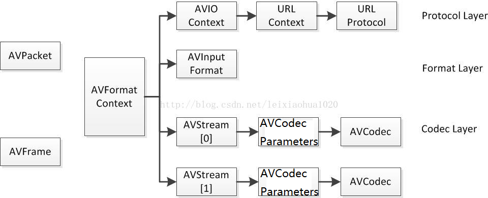

ffmpeg
命令
# 提取音频 vn 忽略视频
ffmpeg -i input.mp4 -ss 00:01:00 -to 00:02:00 -vn -c -c:a copy output.wav
# 添加水印滤镜 overlay=10:10 复杂滤镜 覆盖,坐标10,10
ffmpeg -i input.mp4 -i water.png -filter_complex "overlay=10:10" out.mp4
# 旋转滤镜
ffmpeg -i input.mp4 -vf "transpose=3" out.mp4
# Example: automatic stream selection
# Out1.mkv 是一个 Matroska 容器文件，接受视频、音频和字幕流，因此 ffmpeg 将尝试从每种类型中选择一种。
# 对于视频，它将从 B.mp4中选择流0，这是所有输入视频流中分辨率最高的。
# 对于音频，它将从 B.mp4中选择流3，因为它拥有最多的频道。
# 对于字幕，它将从 B.mp4中选择流2，这是从 A.avi 和 B.mp4中选择的第一个字幕流。
ffmpeg -i A.avi -i B.mp4 out1.mkv out2.wav -map 1:a -c:a copy out3.mov
# B站缓存资源转mp4
ffmpeg -i audio.m4s -i video.m4s -c copy bilibili.mp4
ffmpeg5编译
#!/bin/bash
# 用于编译android平台的脚本
# NDK所在目录
NDK_PATH=/root/ndk/android-ndk-r24
# macOS 平台编译，其他平台看一下 $NDK_PATH/toolchains/llvm/prebuilt/ 下的文件夹名称
HOST_PLATFORM=darwin-x86_64
# minSdkVersion
API=23
TOOLCHAINS="$NDK_PATH/toolchains/llvm/prebuilt/$HOST_PLATFORM"
SYSROOT="$NDK_PATH/toolchains/llvm/prebuilt/$HOST_PLATFORM/sysroot"
# 生成 -fpic 与位置无关的代码
CFLAG="-D__ANDROID_API__=$API -Os -fPIC -DANDROID "
LDFLAG="-lc -lm -ldl -llog "
# 输出目录
PREFIX=`pwd`/android-build
# 日志输出目录
CONFIG_LOG_PATH=${PREFIX}/log
# 公共配置
COMMON_OPTIONS=
# 交叉配置
CONFIGURATION=
build() {
APP_ABI=$1
echo "======== > Start build $APP_ABI"
case ${APP_ABI} in
armeabi-v7a)
ARCH="arm"
CPU="armv7-a"
MARCH="armv7-a"
TARGET=armv7a-linux-androideabi
CC="$TOOLCHAINS/bin/$TARGET$API-clang"
CXX="$TOOLCHAINS/bin/$TARGET$API-clang++"
LD="$TOOLCHAINS/bin/$TARGET$API-clang"
# 交叉编译工具前缀
CROSS_PREFIX="$TOOLCHAINS/bin/arm-linux-androideabi-"
EXTRA_CFLAGS="$CFLAG -mfloat-abi=softfp -mfpu=vfp -marm -march=$MARCH "
EXTRA_LDFLAGS="$LDFLAG"
EXTRA_OPTIONS="--enable-neon --cpu=$CPU "
;;
arm64-v8a)
ARCH="aarch64"
TARGET=$ARCH-linux-android
CC="$TOOLCHAINS/bin/$TARGET$API-clang"
CXX="$TOOLCHAINS/bin/$TARGET$API-clang++"
LD="$TOOLCHAINS/bin/$TARGET$API-clang"
CROSS_PREFIX="$TOOLCHAINS/bin/$TARGET-"
EXTRA_CFLAGS="$CFLAG"
EXTRA_LDFLAGS="$LDFLAG"
EXTRA_OPTIONS=""
;;
x86)
ARCH="x86"
CPU="i686"
MARCH="i686"
TARGET=i686-linux-android
CC="$TOOLCHAINS/bin/$TARGET$API-clang"
CXX="$TOOLCHAINS/bin/$TARGET$API-clang++"
LD="$TOOLCHAINS/bin/$TARGET$API-clang"
CROSS_PREFIX="$TOOLCHAINS/bin/$TARGET-"
#EXTRA_CFLAGS="$CFLAG -march=$MARCH -mtune=intel -mssse3 -mfpmath=sse -m32"
EXTRA_CFLAGS="$CFLAG -march=$MARCH -mssse3 -mfpmath=sse -m32"
EXTRA_LDFLAGS="$LDFLAG"
EXTRA_OPTIONS="--cpu=$CPU "
;;
x86_64)
ARCH="x86_64"
CPU="x86-64"
MARCH="x86_64"
TARGET=$ARCH-linux-android
CC="$TOOLCHAINS/bin/$TARGET$API-clang"
CXX="$TOOLCHAINS/bin/$TARGET$API-clang++"
LD="$TOOLCHAINS/bin/$TARGET$API-clang"
CROSS_PREFIX="$TOOLCHAINS/bin/$TARGET-"
#EXTRA_CFLAGS="$CFLAG -march=$CPU -mtune=intel -msse4.2 -mpopcnt -m64"
EXTRA_CFLAGS="$CFLAG -march=$CPU -msse4.2 -mpopcnt -m64"
EXTRA_LDFLAGS="$LDFLAG"
EXTRA_OPTIONS="--cpu=$CPU "
;;
esac
echo "-------- > Start clean workspace"
make clean
echo "-------- > Start build configuration"
CONFIGURATION="$COMMON_OPTIONS"
CONFIGURATION="$CONFIGURATION --logfile=$CONFIG_LOG_PATH/config_$APP_ABI.log"
CONFIGURATION="$CONFIGURATION --prefix=$PREFIX"
CONFIGURATION="$CONFIGURATION --libdir=$PREFIX/libs/$APP_ABI"
CONFIGURATION="$CONFIGURATION --incdir=$PREFIX/includes/$APP_ABI"
CONFIGURATION="$CONFIGURATION --pkgconfigdir=$PREFIX/pkgconfig/$APP_ABI"
CONFIGURATION="$CONFIGURATION --cross-prefix=$CROSS_PREFIX"
CONFIGURATION="$CONFIGURATION --arch=$ARCH"
CONFIGURATION="$CONFIGURATION --sysroot=$SYSROOT"
CONFIGURATION="$CONFIGURATION --cc=$CC"
CONFIGURATION="$CONFIGURATION --cxx=$CXX"
CONFIGURATION="$CONFIGURATION --ld=$LD"
# nm 和 strip
CONFIGURATION="$CONFIGURATION --nm=$TOOLCHAINS/bin/llvm-nm"
CONFIGURATION="$CONFIGURATION --strip=$TOOLCHAINS/bin/llvm-strip"
CONFIGURATION="$CONFIGURATION $EXTRA_OPTIONS"
echo "-------- > Start config makefile with $CONFIGURATION --extra-cflags=${EXTRA_CFLAGS} --extra-ldflags=${EXTRA_LDFLAGS}"
./configure ${CONFIGURATION} \
--extra-cflags="$EXTRA_CFLAGS" \
--extra-ldflags="$EXTRA_LDFLAGS"
echo "-------- > Start make $APP_ABI with -j1"
make -j1
echo "-------- > Start install $APP_ABI"
make install
echo "++++++++ > make and install $APP_ABI complete."
}
build_all() {
#配置开源协议声明
COMMON_OPTIONS="$COMMON_OPTIONS --enable-gpl"
#目标android平台
COMMON_OPTIONS="$COMMON_OPTIONS --target-os=android"
#取消默认的静态库
COMMON_OPTIONS="$COMMON_OPTIONS --disable-static"
COMMON_OPTIONS="$COMMON_OPTIONS --enable-shared"
COMMON_OPTIONS="$COMMON_OPTIONS --enable-protocols"
#开启交叉编译
COMMON_OPTIONS="$COMMON_OPTIONS --enable-cross-compile"
COMMON_OPTIONS="$COMMON_OPTIONS --enable-optimizations"
COMMON_OPTIONS="$COMMON_OPTIONS --disable-debug"
#尽可能小
COMMON_OPTIONS="$COMMON_OPTIONS --enable-small"
COMMON_OPTIONS="$COMMON_OPTIONS --disable-doc"
#不要命令（执行文件）
COMMON_OPTIONS="$COMMON_OPTIONS --disable-programs" # do not build command line programs
COMMON_OPTIONS="$COMMON_OPTIONS --disable-ffmpeg" # disable ffmpeg build
COMMON_OPTIONS="$COMMON_OPTIONS --disable-ffplay" # disable ffplay build
COMMON_OPTIONS="$COMMON_OPTIONS --disable-ffprobe" # disable ffprobe build
COMMON_OPTIONS="$COMMON_OPTIONS --disable-symver"
COMMON_OPTIONS="$COMMON_OPTIONS --disable-network"
COMMON_OPTIONS="$COMMON_OPTIONS --disable-x86asm"
COMMON_OPTIONS="$COMMON_OPTIONS --disable-asm"
#启用
COMMON_OPTIONS="$COMMON_OPTIONS --enable-pthreads"
COMMON_OPTIONS="$COMMON_OPTIONS --enable-mediacodec"
COMMON_OPTIONS="$COMMON_OPTIONS --enable-jni"
COMMON_OPTIONS="$COMMON_OPTIONS --enable-zlib"
COMMON_OPTIONS="$COMMON_OPTIONS --enable-pic"
COMMON_OPTIONS="$COMMON_OPTIONS --enable-muxer=flv"
#COMMON_OPTIONS="$COMMON_OPTIONS --enable-avresample"
COMMON_OPTIONS="$COMMON_OPTIONS --enable-decoder=h264"
COMMON_OPTIONS="$COMMON_OPTIONS --enable-decoder=mpeg4"
COMMON_OPTIONS="$COMMON_OPTIONS --enable-decoder=mjpeg"
COMMON_OPTIONS="$COMMON_OPTIONS --enable-decoder=png"
COMMON_OPTIONS="$COMMON_OPTIONS --enable-decoder=vorbis"
COMMON_OPTIONS="$COMMON_OPTIONS --enable-decoder=opus"
COMMON_OPTIONS="$COMMON_OPTIONS --enable-decoder=flac"
echo "COMMON_OPTIONS=$COMMON_OPTIONS"
echo "PREFIX=$PREFIX"
echo "CONFIG_LOG_PATH=$CONFIG_LOG_PATH"
mkdir -p ${CONFIG_LOG_PATH}
# build "armeabi-v7a"
build "arm64-v8a"
# build "x86"
# build "x86_64"
}
echo "-------- Start --------"
build_all
echo "-------- End --------"
./configure --disable-x86asm./build_android.sh
# 生成编译文件
./android-build/libs/arm64-v8a/libswscale.so
./android-build/libs/arm64-v8a/libavcodec.so
./android-build/libs/arm64-v8a/libavformat.so
./android-build/libs/arm64-v8a/libavfilter.so
./android-build/libs/arm64-v8a/libpostproc.so
./android-build/libs/arm64-v8a/libavdevice.so
./android-build/libs/arm64-v8a/libswresample.so
./android-build/libs/arm64-v8a/libavutil.so
关键结构体

- 编解码本质就是 AVPacket 和 AVFrame（RawData） 的转化
- AVClass是连接 AVFormatContext 和 AVOption 的桥梁